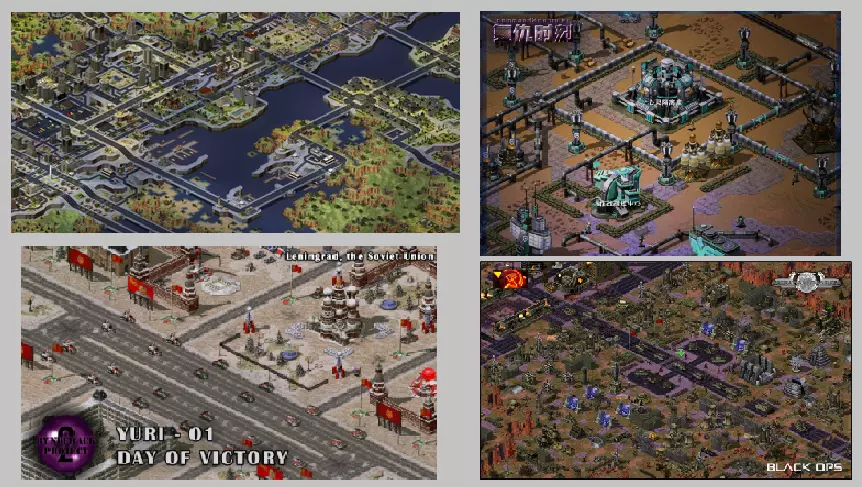
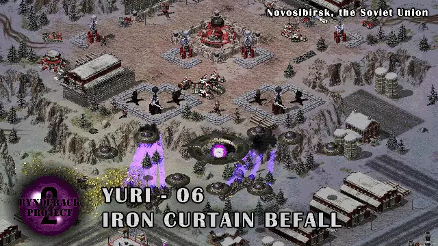

能点开阅读这篇文章，说明你对RA2地图制作有一定的兴趣，那么你该怎样开始地图制作呢？
此文章不传授具体的制作方法，而意在描绘地图制作领域的图景，帮助你选择自己的道路。
首先要了解RA2有哪些地图
RA2的地图是多种多样的，按类型分，有普通遭遇战地图、任务地图、合作任务地图（本质也是遭遇战）等；按使用场景分，有战网联机地图、用于纯净RA2及尤里复仇的地图，还有MOD专用地图；按作者倾向分，有专精风景的地图、专注可玩性的地图，更多的是两者都要的地图。根据地图类型的不同，地图具体的制作方式、侧重点以及学习路径也不尽相同。

就咱所了解到的现状来说，普通的遭遇战地图创作已经没落，就算有也多半是各个MOD专属，虽然多年前遭遇战地图创作非常流行。而用于联机的遭遇战地图（PVP、多人防守等）近年来仍然在战网等平台兴盛，也有许多创新玩法，一般更注重可玩性而非美观。由于咱对联机和对战没兴趣（感觉太累），就没有更多见解了。
任务地图的话，基于尤里复仇的任务地图是最典型的，咱之前也做过几个，多年前非常流行，后面可能是由于老人退坑/MO的虹吸，渐渐的少了。不过，近年来也出现了挺多质量可以的尤里复仇多关任务包。而基于原版RA2的任务图早就很少了。咱这里就不细讲单兵任务、rpg任务、基地战任务等等分类了。此教程集基本上就基于尤里复仇的任务地图编写。
基于MOD的地图，当属MO（心灵终结）一家独大，仅MO3官方就有单人+合作超过100关任务，还有不少各种模式的遭遇战地图，也可联机，质量也都可以。而MO3的新科技树、大量新摆件新地形、复杂的剧情，以及内置地图编辑器，让它有了巨大的二次创作空间。所以近年来基于MO3的自制地图无论是遭遇战还是任务都非常多。不过这么多新东西初见是很难熟悉并且驾驭的，玩的时间短的话不建议做图，而且寄人篱下有利也有弊。个人建议先从原版尤里复仇做起。
其他MOD的话，复仇时刻、世界轴承、TC2、New Departure等也有不少好的战役，不过咱大部分还没玩过，没有更多了解。许多新兴的MOD目前还缺少配套的战役，若你学有所成，可以去帮忙做。
了解了这些，你就可以大致想想自己想做什么地图了。当然，因为普通遭遇战地图是最基础最简单的，你首先要会做它才行。
其次想想制作地图的目的
做地图，便是有做地图的目的，可能是自娱自乐，可能是想做一个属于自己的作品，可能是想书写一个故事，可能是做出来想给别人玩，也可能只是随便试试，或者各种成分都有。弄清了自己的主要目的，也就找到了自己做图时的侧重点。自娱自乐，那就无须考虑别人的看法；想要获得认可，那就应该多听听别人的建议。
一般来说，做地图与写小说、画画、拍电影类似，也属于创作，援引《mapper核心思维指导》里的话，也是在创作一件艺术品，以表达自身的情感。
虽然我们目前可以做出很棒的MOD与地图，但终究，RA2在不断地老去，制作MOD与地图，也只是一种创造性的娱乐唉，没有金钱回报，不应投入过多精力。
接下来请尽量了解优秀的地图是什么样的
做地图前，必然要先玩地图，无论是玩官方图，还是自制任务，还是MOD，其实都是在体验现成的地图。在体验的过程中，根据自己的感受，就可以了解到，一份好的地图，或者说自己喜欢的地图，有哪些特点。地形美观？设计合理？剧情有趣？有创意？难度合适？对战平衡？这些都是一份好的地图（任务）可以具备的特点。多体验各种地图，心中就有了自己想要的地图的样子，就可以有方向地模仿并且再创造了。
目前，挺多MOD都内置了一些质量可以的战役或遭遇战，各自讲述了不同的故事。而尤里复仇的话，早年在任务之家和贴吧有不少经典作品，比如一些RPG型任务，后来也有林德拉克计划这样的现象级作品，在原版把地形、剧情、玩法设计、细节、新单位、难度把握等方面都做到了非常好的水平，影响了一大批玩家和作者。

另外，咱的网站红警任务集锦/MOD集锦也收录了很多任务和MOD（任务都是我玩过的或者没玩过但有名的），有想玩的可以去看。
当然，不要觉着自己永远比不上别人，因为，重要的是，做出属于自己的东西，以作品为媒介，表达自己想表达的内容。文无第一，作品到了一定水准之后，其实不用非要分出“哪个最好”来，都是独一无二的。好的任务多得是，百花齐放才好，各显身手，只要能有所得就足够了。
到了学习具体制作技术的时候了
现在的初学者们是幸运的，因为现在，网上已经有了很多的地图教程、有了很多的优秀案例、有了很多的辅助工具与新素材，还有咱的教程集////w。所以，请根据此教程集，还有网上的其他资源，学习具体的地图制作吧，先从普通的遭遇战地图开始！
多实践，多思考，多交流
光看没用，下载了相关的工具，阅读了一些基础教程之后，就应该开始尝试了。
尝鲜阶段，就学习新建地图，各种地形放一下，侧栏各种东西放一下，石头树木摆摆看，升降一下地形，看看悬崖什么样，打开框架模式试试，最后在游戏里能进地图就算成功。
下图即为多年前咱的第一张地图，包含了各种粗糙的尝试。

初学阶段，该画一个完整的悬崖了，摆一个连贯的水岸，弄点地形起伏，摆一个简单的城区，有余力就弄一个简单的归属触发，最后简单打一场遭遇战。
往后可以多学学如何把地图画得美观了。先构思主体，比如一个海滨城市，一个雪山秘密基地；再用场景填充地图，比如野外的悬崖树林，河流沙滩，乡间小路，城区的建筑群，公园，港口，居民区……这些都可以做做看。对于地图美化，此教程集里的其他条目有更详细的叙述。地图美化做起来往往是枯燥的，总感觉没完没了，但当你做完一个像样的区域，会知道你的时间没有白费，这就是创作的感觉。
普通的遭遇战地图并不需要多少触发。有环境类的车辆移动，风声鸟叫，设定、彩蛋类的改变归属等就足够了，就算没有触发也没事。不过单独的遭遇战地图没啥人玩……或许一些制作中的MOD会需要。如果你是想用于联机，可以看看红警战网（ra2ol）。
如果想制作任务地图，就需要多学习触发，包括任务流程、作战小队等一大堆内容了，这些东西可能比较复杂，不过可以慢慢来。先做一个简单的摧毁胜利的流程，然后可以尝试做各种合适的场景了，比如任务开场，解救俘虏，援军，目标完成，AI出兵等等。对于触发等，此教程集里的其他条目也有更详细的叙述。
在制作的过程中，如果遇到了困难，要先动脑子思考，想想是哪里的问题，并且查阅资料或者进行尝试，不要懒惰地不加思考就求助他人。这要求你有一定的思维以及信息检索能力。当然，如果一直想不出来，还是要询问他人（)。不过教程里明显有的就不用问了。还有一点就是切记不要闭门造车，要多关注新的东西，提升自己的认知。
进阶
与创作其他东西类似，想要做出一份足够好的作品，需要投入不少时间和精力，并且不断琢磨要表达的内容本身，以及在RA2中的表达方式，然后将新的认知和想法投入实践。具体的呢，可以看看此教程集【思想】分类中其他栏目。
以上就是本文的全部内容了，希望有感兴趣的人读过此文，可以顺利入坑！

作者：轻稚天雪
2021-3-5 created
2023-12 rewrited